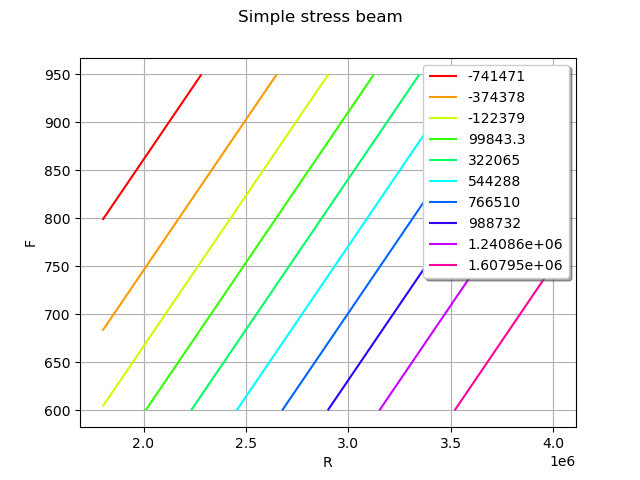
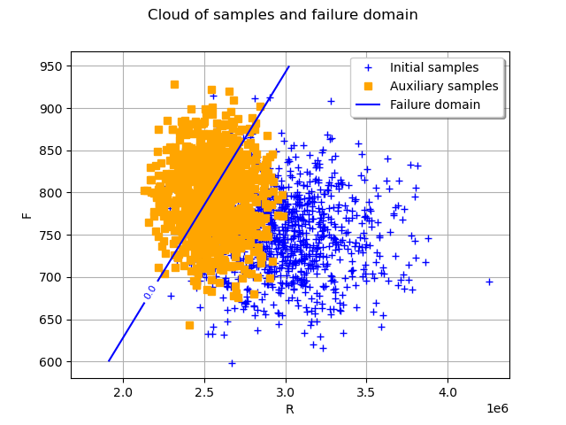
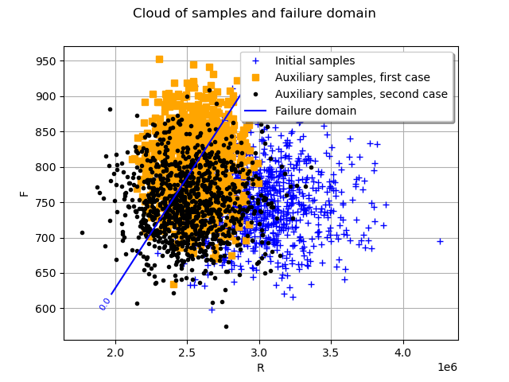
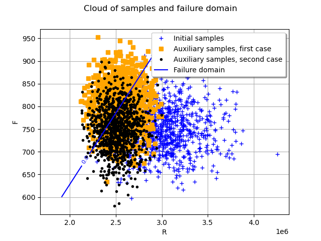

Note
Go to the end to download the full example code
Cross Entropy Importance Sampling¶
The objective is to evaluate a failure probability using Cross Entropy Importance Sampling.
Two versions in the standard or physical spaces are implemented.
See StandardSpaceCrossEntropyImportanceSampling and PhysicalSpaceCrossEntropyImportanceSampling.
We consider the simple stress beam example: axial stressed beam.
First, we import the python modules:
import openturns as ot
import openturns.experimental as otexp
import openturns.viewer as otv
from openturns.usecases import stressed_beam
ot.RandomGenerator.SetSeed(0)
Create the probabilistic model¶
axialBeam = stressed_beam.AxialStressedBeam()
distribution = axialBeam.distribution
print("Initial distribution:", distribution)
Initial distribution: ComposedDistribution(LogNormal(muLog = 14.9091, sigmaLog = 0.0997513, gamma = 0), Normal(mu = 750, sigma = 50), IndependentCopula(dimension = 2))
Draw the limit state function  to help to understand the shape of the limit state.
to help to understand the shape of the limit state.
g = axialBeam.model
graph = ot.Graph("Simple stress beam", "R", "F", True, "topright")
drawfunction = g.draw([1.8e6, 600], [4e6, 950.0], [100] * 2)
graph.add(drawfunction)
view = otv.View(graph)

Create the output random vector  with
with  .
.
X = ot.RandomVector(distribution)
Y = ot.CompositeRandomVector(g, X)
Create the event  ¶
¶
threshold = 0.0
event = ot.ThresholdEvent(Y, ot.Less(), 0.0)
Evaluate the probability with the Standard Space Cross Entropy¶
We choose to set the intermediate quantile level to 0.35.
standardSpaceIS = otexp.StandardSpaceCrossEntropyImportanceSampling(event, 0.35)
The sample size at each iteration can be changed by the following accessor:
standardSpaceIS.setMaximumOuterSampling(1000)
Now we can run the algorithm and get the results.
standardSpaceIS.run()
standardSpaceISResult = standardSpaceIS.getResult()
proba = standardSpaceISResult.getProbabilityEstimate()
print("Proba Standard Space Cross Entropy IS = ", proba)
print(
"Current coefficient of variation = ",
standardSpaceISResult.getCoefficientOfVariation(),
)
Proba Standard Space Cross Entropy IS = 0.029465848610494363
Current coefficient of variation = 0.045029988245260714
The length of the confidence interval of level  is:
is:
length95 = standardSpaceISResult.getConfidenceLength()
print("Confidence length (0.95) = ", standardSpaceISResult.getConfidenceLength())
Confidence length (0.95) = 0.005201143946946643
which enables to build the confidence interval.
print(
"Confidence interval (0.95) = [",
proba - length95 / 2,
", ",
proba + length95 / 2,
"]",
)
Confidence interval (0.95) = [ 0.02686527663702104 , 0.032066420583967685 ]
We can analyze the simulation budget.
print(
"Numerical budget: ",
standardSpaceISResult.getBlockSize() * standardSpaceISResult.getOuterSampling(),
)
Numerical budget: 3000
We can also retrieve the optimal auxiliary distribution in the standard space.
print(
"Auxiliary distribution in Standard space: ",
standardSpaceISResult.getAuxiliaryDistribution(),
)
Auxiliary distribution in Standard space: Normal(mu = [-1.565,0.931278], sigma = [0.635602,0.863718], R = [[ 1 0 ]
[ 0 1 ]])
Draw initial samples and final samples¶
First we get the auxiliary samples in the standard space and we project them in physical space.
auxiliaryInputSamples = standardSpaceISResult.getAuxiliaryInputSample()
auxiliaryInputSamplesPhysicalSpace = (
distribution.getInverseIsoProbabilisticTransformation()(auxiliaryInputSamples)
)
graph = ot.Graph("Cloud of samples and failure domain", "R", "F", True, "topright")
# Generation of samples with initial distribution
initialSamples = ot.Cloud(
distribution.getSample(1000), "blue", "plus", "Initial samples"
)
auxiliarySamples = ot.Cloud(
auxiliaryInputSamplesPhysicalSpace, "orange", "fsquare", "Auxiliary samples"
)
# Plot failure domain
nx, ny = 50, 50
xx = ot.Box([nx], ot.Interval([1.80e6], [4e6])).generate()
yy = ot.Box([ny], ot.Interval([600.0], [950.0])).generate()
inputData = ot.Box([nx, ny], ot.Interval([1.80e6, 600.0], [4e6, 950.0])).generate()
outputData = g(inputData)
mycontour = ot.Contour(xx, yy, outputData, [0.0], ["0.0"], True)
mycontour.setLegend("Failure domain")
graph.add(initialSamples)
graph.add(auxiliarySamples)
graph.add(mycontour)
view = otv.View(graph)

In the previous graph, the blue crosses stand for samples drawn with the initial distribution and the orange squares stand for the samples drawn at the final iteration.
Estimation of the probability with the Physical Space Cross Entropy¶
For a more advanced usage, it is possible to work in the physical space to specify the auxiliary distribution. In this second example, we take the auxiliary distribution in the same family as the initial distribution and we want to optimize all the parameters.
The parameters to be optimized are the parameters of the native distribution. It is necessary to define among all the distribution parameters, which ones will be optimized through the indices of the parameters. In this case, all the parameters will be optimized.
Be careful that the native parameters of the auxiliary distribution will be considered.
Here for the LogNormalMuSigma distribution, this corresponds
to muLog, sigmaLog and gamma.
The user can use getParameterDescription() method to access to the parameters of the auxiliary distribution.
ot.RandomGenerator.SetSeed(0)
marginR = ot.LogNormalMuSigma().getDistribution()
marginF = ot.Normal()
auxiliaryMarginals = [marginR, marginF]
auxiliaryDistribution = ot.ComposedDistribution(auxiliaryMarginals)
# Definition of parameters to be optimized
activeParameters = ot.Indices(5)
activeParameters.fill()
# WARNING : native parameters of distribution have to be considered
bounds = ot.Interval([14, 0.01, 0.0, 500, 20], [16, 0.2, 0.1, 1000, 70])
initialParameters = distribution.getParameter()
desc = auxiliaryDistribution.getParameterDescription()
p = auxiliaryDistribution.getParameter()
print(
"Parameters of the auxiliary distribution:",
", ".join([f"{param}: {value:.3f}" for param, value in zip(desc, p)]),
)
physicalSpaceIS1 = otexp.PhysicalSpaceCrossEntropyImportanceSampling(
event, auxiliaryDistribution, activeParameters, initialParameters, bounds
)
Parameters of the auxiliary distribution: muLog_marginal_0: 0.000, sigmaLog_marginal_0: 1.000, gamma_marginal_0: 0.000, mean_0_marginal_1: 0.000, standard_deviation_0_marginal_1: 1.000
Custom optimization algorithm can be also specified for the auxiliary distribution parameters optimization, here for example we choose TNC.
physicalSpaceIS1.setOptimizationAlgorithm(ot.TNC())
The number of samples per step can also be specified.
physicalSpaceIS1.setMaximumOuterSampling(1000)
Finally, we run the algorithm and get the results.
physicalSpaceIS1.run()
physicalSpaceISResult1 = physicalSpaceIS1.getResult()
print("Probability of failure:", physicalSpaceISResult1.getProbabilityEstimate())
print("Coefficient of variation:", physicalSpaceISResult1.getCoefficientOfVariation())
Probability of failure: 0.029702353119720654
Coefficient of variation: 0.04321365594527282
We can also decide to optimize only the means of the marginals and keep the other parameters identical to the initial distribution.
ot.RandomGenerator.SetSeed(0)
marginR = ot.LogNormalMuSigma(3e6, 3e5, 0.0).getDistribution()
marginF = ot.Normal(750.0, 50.0)
auxiliaryMarginals = [marginR, marginF]
auxiliaryDistribution = ot.ComposedDistribution(auxiliaryMarginals)
print("Parameters of initial distribution", auxiliaryDistribution.getParameter())
# Definition of parameters to be optimized
activeParameters = ot.Indices([0, 3])
# WARNING : native parameters of distribution have to be considered
bounds = ot.Interval([14, 500], [16, 1000])
initialParameters = [15, 750]
physicalSpaceIS2 = otexp.PhysicalSpaceCrossEntropyImportanceSampling(
event, auxiliaryDistribution, activeParameters, initialParameters, bounds
)
physicalSpaceIS2.run()
physicalSpaceISResult2 = physicalSpaceIS2.getResult()
print("Probability of failure:", physicalSpaceISResult2.getProbabilityEstimate())
print("Coefficient of variation:", physicalSpaceISResult2.getCoefficientOfVariation())
Parameters of initial distribution [14.9091,0.0997513,0,750,50]
Probability of failure: 0.027545561342593866
Coefficient of variation: 0.08610020947245134
Let us analyze the auxiliary output samples for the two previous simulations. We can plot initial (in blue) and auxiliary samples in physical space (orange for the first simulation and black for the second simulation).
graph = ot.Graph("Cloud of samples and failure domain", "R", "F", True, "topright")
auxiliarySamples1 = ot.Cloud(
physicalSpaceISResult1.getAuxiliaryInputSample(),
"orange",
"fsquare",
"Auxiliary samples, first case",
)
auxiliarySamples2 = ot.Cloud(
physicalSpaceISResult2.getAuxiliaryInputSample(),
"black",
"bullet",
"Auxiliary samples, second case",
)
graph.add(initialSamples)
graph.add(auxiliarySamples1)
graph.add(auxiliarySamples2)
graph.add(mycontour)
view = otv.View(graph)

By analyzing the failure samples, one may want to include correlation parameters in the auxiliary distribution. In this last example, we add a Normal copula. The correlation parameter will be optimized with associated interval between 0 and 1.
ot.RandomGenerator.SetSeed(0)
marginR = ot.LogNormalMuSigma(3e6, 3e5, 0.0).getDistribution()
marginF = ot.Normal(750.0, 50.0)
auxiliaryMarginals = [marginR, marginF]
copula = ot.NormalCopula()
auxiliaryDistribution = ot.ComposedDistribution(auxiliaryMarginals, copula)
desc = auxiliaryDistribution.getParameterDescription()
p = auxiliaryDistribution.getParameter()
print(
"Initial parameters of the auxiliary distribution:",
", ".join([f"{param}: {value:.3f}" for param, value in zip(desc, p)]),
)
# Definition of parameters to be optimized
activeParameters = ot.Indices(6)
activeParameters.fill()
bounds = ot.Interval(
[14, 0.01, 0.0, 500.0, 20.0, 0.0], [16, 0.2, 0.1, 1000.0, 70.0, 1.0]
)
initialParameters = auxiliaryDistribution.getParameter()
physicalSpaceIS3 = otexp.PhysicalSpaceCrossEntropyImportanceSampling(
event, auxiliaryDistribution, activeParameters, initialParameters, bounds
)
physicalSpaceIS3.run()
physicalSpaceISResult3 = physicalSpaceIS3.getResult()
desc = physicalSpaceISResult3.getAuxiliaryDistribution().getParameterDescription()
p = physicalSpaceISResult3.getAuxiliaryDistribution().getParameter()
print(
"Optimized parameters of the auxiliary distribution:",
", ".join([f"{param}: {value:.3f}" for param, value in zip(desc, p)]),
)
print("Probability of failure: ", physicalSpaceISResult3.getProbabilityEstimate())
print("Coefficient of variation: ", physicalSpaceISResult3.getCoefficientOfVariation())
Initial parameters of the auxiliary distribution: muLog_marginal_0: 14.909, sigmaLog_marginal_0: 0.100, gamma_marginal_0: 0.000, mean_0_marginal_1: 750.000, standard_deviation_0_marginal_1: 50.000, R_2_1_copula: 0.000
Optimized parameters of the auxiliary distribution: muLog_marginal_0: 14.735, sigmaLog_marginal_0: 0.060, gamma_marginal_0: 0.000, mean_0_marginal_1: 750.001, standard_deviation_0_marginal_1: 50.001, R_2_1_copula: 0.000
Probability of failure: 0.027282009127094012
Coefficient of variation: 0.06193432381407314
Finally, we plot the new auxiliary samples in black.
graph = ot.Graph("Cloud of samples and failure domain", "R", "F", True, "topright")
auxiliarySamples1 = ot.Cloud(
physicalSpaceISResult1.getAuxiliaryInputSample(),
"orange",
"fsquare",
"Auxiliary samples, first case",
)
auxiliarySamples3 = ot.Cloud(
physicalSpaceISResult3.getAuxiliaryInputSample(),
"black",
"bullet",
"Auxiliary samples, second case",
)
graph.add(initialSamples)
graph.add(auxiliarySamples1)
graph.add(auxiliarySamples3)
graph.add(mycontour)
# sphinx_gallery_thumbnail_number = 4
view = otv.View(graph)

The quantileLevel parameter can be also changed using the ResourceMap key : CrossEntropyImportanceSampling-DefaultQuantileLevel.
Be careful that this key changes the value number of both StandardSpaceCrossEntropyImportanceSampling
and PhysicalSpaceCrossEntropyImportanceSampling.
ot.ResourceMap.SetAsScalar("CrossEntropyImportanceSampling-DefaultQuantileLevel", 0.4)
physicalSpaceIS4 = otexp.PhysicalSpaceCrossEntropyImportanceSampling(
event, auxiliaryDistribution, activeParameters, initialParameters, bounds
)
print("Modified quantile level:", physicalSpaceIS4.getQuantileLevel())
Modified quantile level: 0.4
The optimized auxiliary distribution with a dependency between the two marginals allows one to better fit the failure domain, resulting in a lower coefficient of variation.